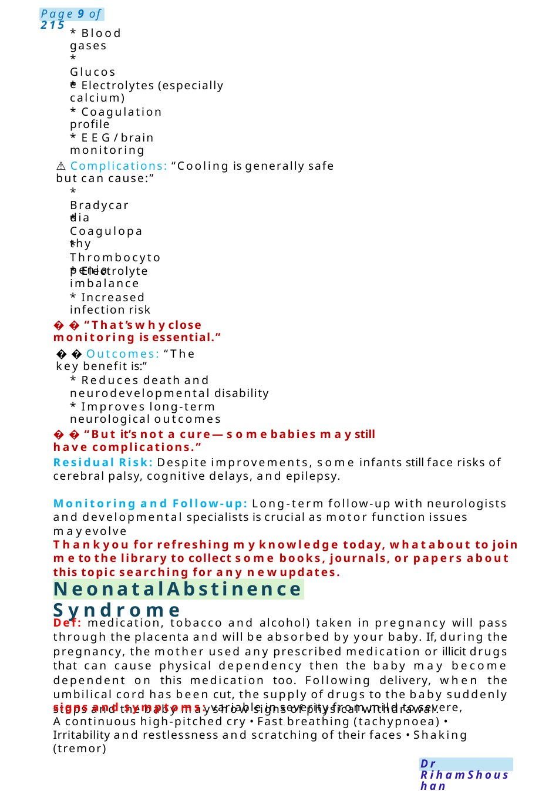
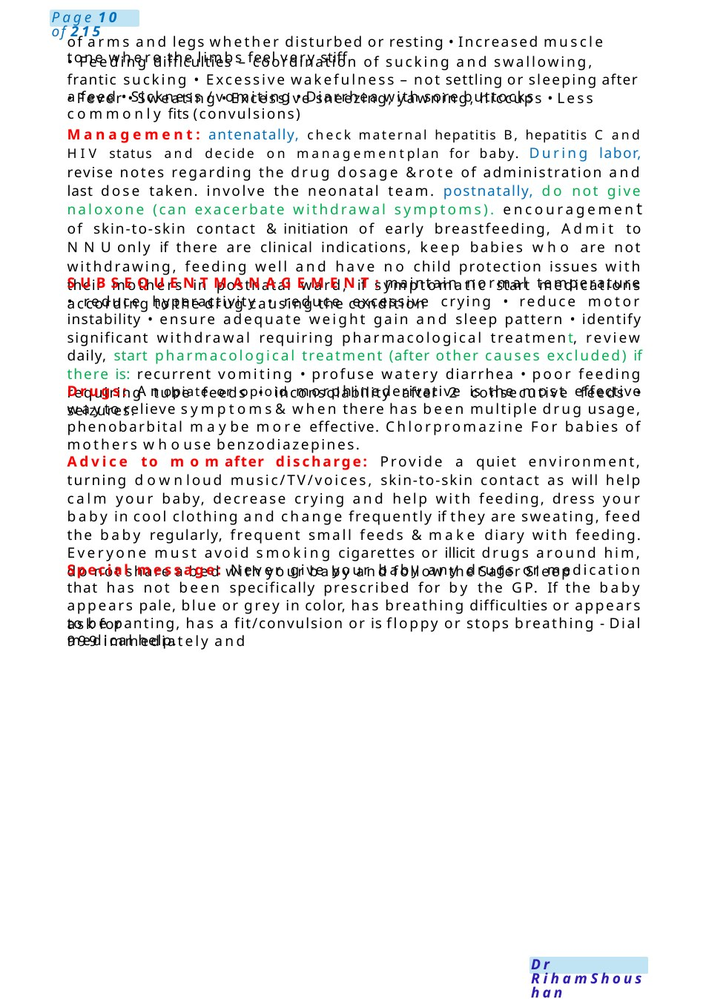
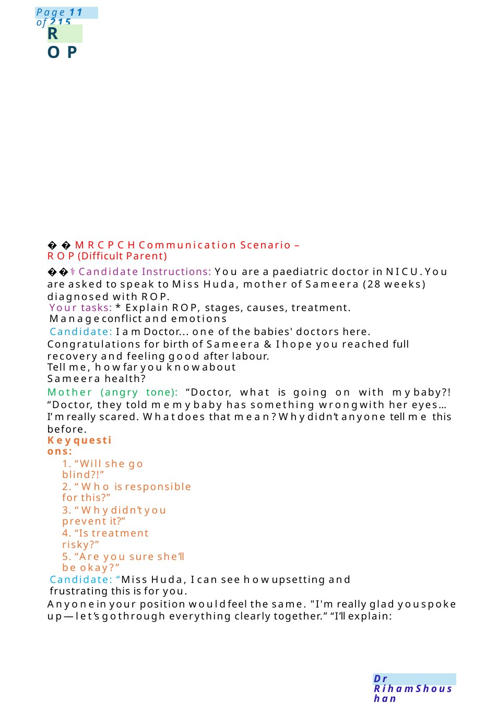

Neonatal Abstinence Syndrome
⚠️Complications: “Cooling is generally safe but can cause:” “But it’s not a cure—somebabies maystill have complications.”
Scenario Summary
⚠️Complications: “Cooling is generally safe but can cause:” “But it’s not a cure—somebabies maystill have complications.”
Full Original Scenario

Neonatal Abstinence Syndrome
- Blood gases
- Glucose
- Electrolytes (especially calcium)
- Coagulation profile
- EEG/ brain monitoring
- ️Complications: “Cooling is generally safe but can cause:”
- Bradycardia
- Coagulopathy
- Thrombocytopenia
- Electrolyte imbalance
- Increased infection risk
“That’s whyclose monitoring is essential.”
Outcomes: “The key benefit is:”
- Reduces death and neurodevelopmental disability
- Improves long-term neurological outcomes
“But it’s not a cure—somebabies maystill have complications.”
Residual Risk: Despite improvements, some infants still face risks of cerebral palsy, cognitive delays, and epilepsy.
Monitoring and Follow-up: Long-term follow-up with neurologists and developmental specialists is crucial as motor function issues mayevolve
Thankyou for refreshing myknowledge today, whatabout to join meto the library to collect some books, journals, or papers about this topic searching for any newupdates.
Def: medication, tobacco and alcohol) taken in pregnancy will pass through the placenta and will be absorbed by your baby. If, during the pregnancy, the mother used any prescribed medication or illicit drugs that can cause physical dependency then the baby may become dependent on this medication too. Following delivery, when the umbilical cord has been cut, the supply of drugs to the baby suddenly stops and the baby mayshow signs of physical withdrawal.
signs and symptoms: variable in severity from mild to severe, Acontinuous high-pitched cry • Fast breathing (tachypnoea) • Irritability and restlessness and scratching of their faces • Shaking (tremor)

ask for medical help.
of arms and legs whether disturbed or resting • Increased muscle tone where the limbs feel very stiff
- Feeding difficulties – coordination of sucking and swallowing, frantic sucking • Excessive wakefulness – not settling or sleeping after a feed • Sickness / vomiting • Diarrhea with sore buttocks
- Fever • Sweating • Excessive sneezing, yawning, hiccups • Less commonly fits (convulsions)
Management: antenatally, check maternal hepatitis B, hepatitis C and HIV status and decide on managementplan for baby. During labor, revise notes regarding the drug dosage &rote of administration and last dose taken. involve the neonatal team. postnatally, do not give naloxone (can exacerbate withdrawal symptoms). encouragement of skin-to-skin contact &initiation of early breastfeeding, Admit to NNUonly if there are clinical indications, keep babies who are not withdrawing, feeding well and have no child protection issues with their mothers in postnatal ward, if symptomatic start medications according to the drug causing the condition
SUBSEQUENTMANAGEMENT:maintain normal temperature • reduce hyperactivity • reduce excessive crying • reduce motor instability • ensure adequate weight gain and sleep pattern • identify significant withdrawal requiring pharmacological treatment, review daily, start pharmacological treatment (after other causes excluded) if there is: recurrent vomiting • profuse watery diarrhea • poor feeding requiring tube feeds • inconsolability after 2 consecutive feeds • seizures.
Drugs: Anopiate or opioid morphinederivative is the most effective wayto relieve symptoms&when there has been multiple drug usage, phenobarbital maybe more effective. Chlorpromazine For babies of mothers whouse benzodiazepines.
Advice to momafter discharge: Provide a quiet environment, turning downloud music/TV/voices, skin-to-skin contact as will help calm your baby, decrease crying and help with feeding, dress your baby in cool clothing and change frequently if they are sweating, feed the baby regularly, frequent small feeds &make diary with feeding. Everyone must avoid smoking cigarettes or illicit drugs around him, do not share a bed with your baby and follow the Safer Sleep
Special message: Never give your baby any drugs or medication that has not been specifically prescribed for by the GP. If the baby appears pale, blue or grey in color, has breathing difficulties or appears to be panting, has a fit/convulsion or is floppy or stops breathing - Dial 999 immediately and

ROP
MRCPCHCommunication Scenario – ROP(Difficult Parent)
⚕️Candidate Instructions: You are a paediatric doctor in NICU.You are asked to speak to Miss Huda, mother of Sameera (28 weeks) diagnosed with ROP.
Your tasks: * Explain ROP, stages, causes, treatment. Manageconflict and emotions
Candidate: I am Doctor... one of the babies' doctors here. Congratulations for birth of Sameera &I hope you reached full recovery and feeling good after labour.
Tell me, howfar you knowabout Sameera health?
Mother (angry tone): “Doctor, what is going on with mybaby?! “Doctor, they told memybaby has something wrongwith her eyes...I’mreally scared. Whatdoes that mean?Whydidn’t anyone tell me this before.
Keyquestions:
1. “Will she go blind?!”
2. “Who is responsible for this?”
3. “Whydidn’t you prevent it?”
4. “Is treatment risky?”
5. “Are you sure she’ll be okay?”
Candidate: “Miss Huda, I can see howupsetting and frustrating this is for you.
Anyonein your position wouldfeel the same. "I'm really glad youspoke up—let’s gothrough everything clearly together.” “I’ll explain: